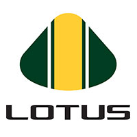

Team: Lotus
History:
The team's Formula One history started in 1981 as the Toleman Motorsport team, based in Witney, Oxfordshire, England. In 1986, the team was renamed to Benetton Formula, following its purchase in 1985 by the Benetton family. In 1992/3, the team moved a few miles to a new base in Enstone.